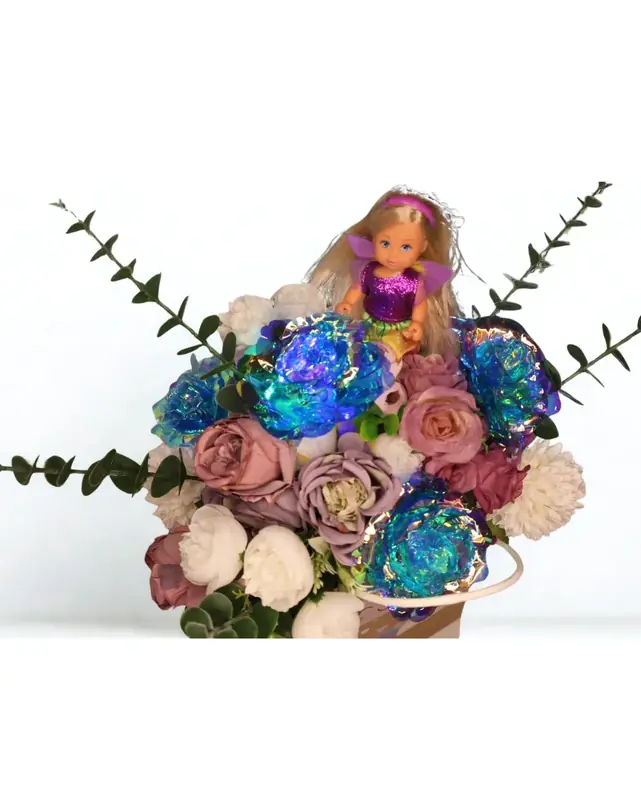
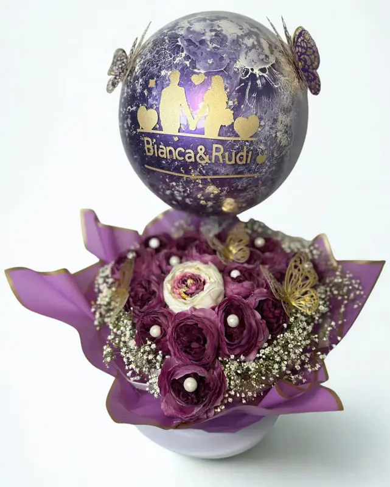

Fotografie
Was ich sehe
Menschen in echten Momenten, Produkte mit Charakter und die stillen Orte dazwischen. In jeder Serie gibt es mindestens ein Detail – das kleine Ding, das alles erzählt.





Hier entstehen gerade neue Bilder – schau bald wieder vorbei.
Vorher / Nachher
Aus der Bearbeitung
So entsteht der Look meiner Bilder in Lightroom – zieh den Regler, um den Unterschied zu sehen.
Platz für ein Vorher/Nachher-Beispiel aus Lightroom.